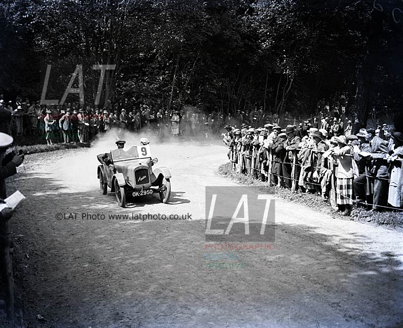

Austin Harris photos

100 years ago
2022 is the 100 year anniversary of the Austin 7, above shows the first time it was seen by the public competing at Shelsley Walsh in July 1922. Driven by Louis Kings and entered by Herbert Austin.
About
The site started out as somewhere to put some images I was researching on Austin 7 "Ulsters" while I was working at Haymarket, (then the home of LAT and its fantastic archive). It quickly became apparent that there was a great interest for other cars so I decided to keep on scanning and putting the images online.